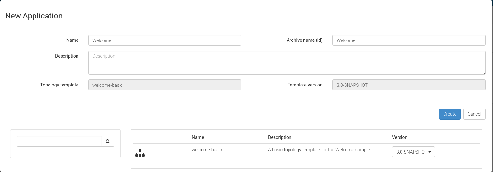
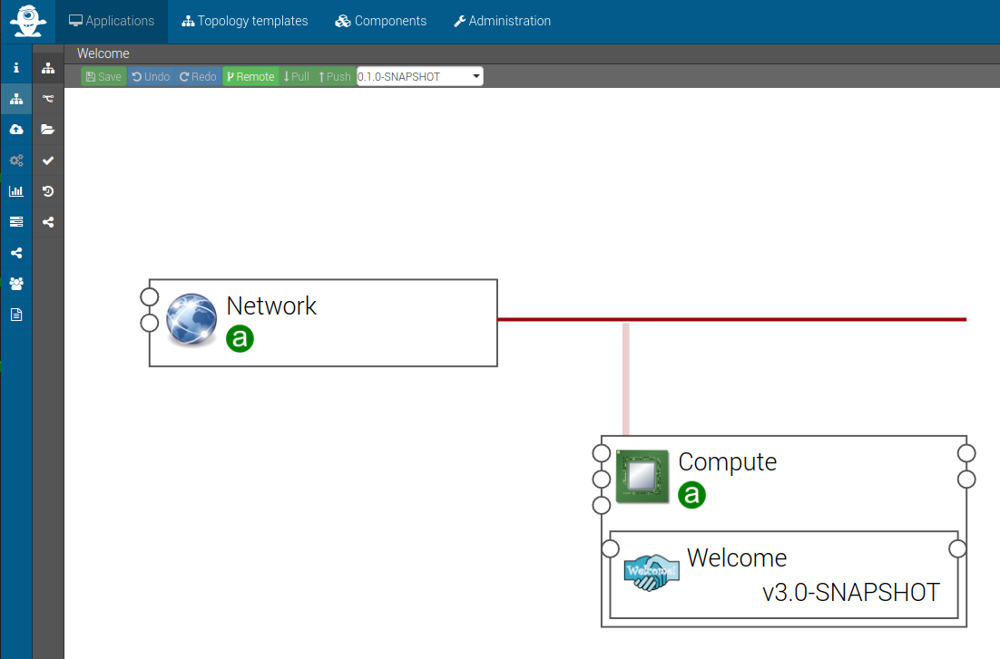

Quick Start - Deploy your first application
Edit (pull request)Import Samples
To get started, you can upload sample application from the Forge and and deploy the Welcome application on one of the supported types of infrastructures as described below.
Now we have the Welcome template ready to use, we can create an application based on it. To do this, go to the  section. Click on the
section. Click on the  button and select the welcome-basic in the table at the bottom of the popup.
button and select the welcome-basic in the table at the bottom of the popup.

The application creation should redirect you on the application information page. To see your application topology, go to  page, you will see the following screen.
page, you will see the following screen.

Setup and deploy your application
To deploy this new application, go on the  sub-menu and :
sub-menu and :
- Select your location
- Go to the Deploy tab
- And click on


note
To understand all configuration available for the deployment page, please refer to the Alien4Cloud application management section .
Check that your application is up and running
On the runtime view, you can have the detailed deployment progress. Click on the side bar sub-menu 

When all nodes are deployed, go back in the  sub-menu to get the Welcome application url and test it !
sub-menu to get the Welcome application url and test it !

Next Steps: Define your own components
Please refer to the Alien4Cloud dev guide to write your own components.
Edit (pull request)